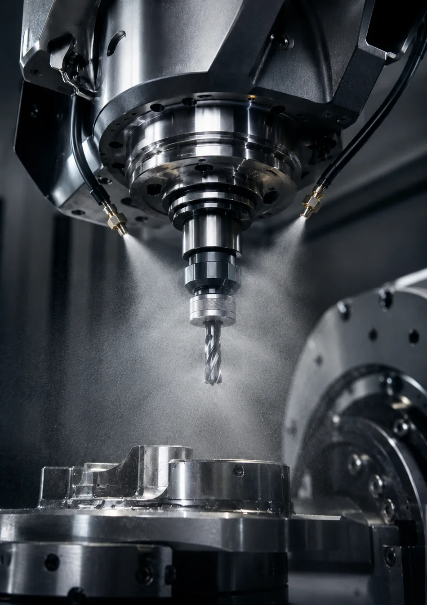

CNC Cutting & Cooling Fluid
Ester-based high-performance cutting fluid for MQL and flooded machining.
CNC Cutting & Cooling Fluid
Ester-based high-performance cutting fluid for flooded machining and minimal quantity lubrication (MQL).

FLUTEX Cutting Fluid
An ester-based cutting fluid developed for demanding metalworking operations where lubrication quality, surface finish, tool life and low-smoke performance matter.
Machining Applications
Gear machining including hobbing, milling, shaping, skiving and broaching, plus cold sawing, turning, reaming and threading. Suitable for both flooded machining and MQL applications.
Suitable Materials
Case-hardening and through-hardening steels, steel alloys, titanium and titanium alloys, aluminum and aluminum alloys, and copper alloys.
Performance Benefits
- High flash point for very low smoke under hard cutting conditions
- Good lubricating properties for improved surface quality and tool life
- Reduced emissions for a cleaner machining environment
- Ester-oil based formulation with renewable raw-material content
- Not classified as hazardous under the referenced SDS
- Not regulated for ADR / IMDG / IATA transport
Typical Technical Data
- Viscosity at 40°C35 mm²/s
- Density at 20°C0.90 g/cm³
- Flash Point310°C
- Ester Content>90%
- Mineral Oil Content0%
- Zinc Content0%
- Copper Corrosivity1a
- ColourYellow
- Storage Temperature0–40°C
- Shelf Life36 months
Formula note: chlorine and sulphur EP additives are not part of the formulation; trace amounts may nevertheless be present.
Need an exact match?
Send the part number, dimensions, drawing, photo or machine/application details.